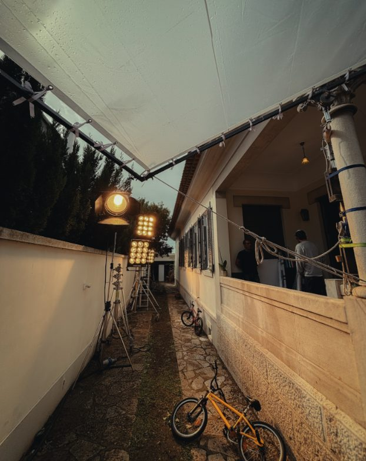

Een verklaring, geen keurmerk
De makers leggen zelf vast wat er is gebeurd. Audiovisueel AI Statement controleert of certificeert niet, maar maakt een heldere en vergelijkbare verklaring mogelijk. Vertrouwen is belangrijk.
Audiovisueel AI Statement maakt helder waar en in welke mate generatieve AI in een productie is gebruikt, van script tot film.
Invullen duurt ongeveer drie minuten. Niets wordt geüpload.Lange documentaire · 2026
AI heeft het filmlandschap blijvend veranderd. Het is steeds moeilijker om te zien of beeld, geluid of tekst gedeeltelijk of volledig is gegenereerd. Audiovisueel AI Statement geeft makers een eenvoudige manier om daar zelf duidelijk over te zijn.
De makers leggen zelf vast wat er is gebeurd. Audiovisueel AI Statement controleert of certificeert niet, maar maakt een heldere en vergelijkbare verklaring mogelijk. Vertrouwen is belangrijk.
Twee bijgewerkte shots zijn iets anders dan een volledig gegenereerde film. In deze verklaring wordt duidelijk bij welke onderdelen in film er gebruik gemaakt is van AI.
Zorgen over auteurschap, arbeid en herkomst zijn begrijpelijk. Juist daarom helpt concrete openheid beter dan een algemeen label.
Het gaat om twee dingen die naast elkaar staan. Het ene kun je vandaag al maken, het andere bouwen we samen op.
Eén document per productie, van jou.
Je legt per onderdeel vast wat er is gebeurd en zet je naam eronder. Je krijgt een PDF die iedereen kan lezen en een bestand dat systemen kunnen verwerken. Je stuurt het mee met een inzending, bewaart het naast je masters of geeft het aan je distributeur.
Eén plek waar iedereen kan nakijken.
Straks kun je een productie opzoeken en zien wat de makers zelf hebben verklaard. Zoeken en lezen blijft gratis, voor publiek en journalisten net zo goed als voor festivals en omroepen. Wat erin staat, is voor iedereen volledig zichtbaar.
Elke verklaring die erbij komt maakt het register bruikbaarder. Wie vandaag invult, bouwt mee aan iets waar de hele sector straks iets aan heeft.
Een statement opstellen, publiceren en lezen is gratis. Komt het openbare register er, dan is alles wat daarin staat voor iedereen zichtbaar. Er komt geen betaalde laag met méér inhoud. Lokale concepten worden nooit automatisch openbaar.
Sommige stukken hóren niet openbaar: toestemmingsverklaringen van acteurs, licentievoorwaarden van leveranciers. Die deelt de producent zelf, met wie hij kiest. Betaald zijn alleen diensten aan organisaties: snelle koppelingen, bulk-toegang en technische implementatie.
Een film ontstaat door samenwerking tussen veel vakgebieden. Daarom kijkt het rapport verder dan alleen beeldgeneratie: van scenario en casting tot setgeluid, montage, muziek en mastering.

Vul het één keer in en je hebt het antwoord klaar voor elk festivalformulier, elke omroep, klant, reclamebureau of opdrachtgever.
Voor elk onderdeel kies je één antwoord: niet gebruikt, als hulpmiddel, AI-materiaal in het eindresultaat, of niet van toepassing. Daarnaast kun je aanvinken dat een AI-agent werk overnam. Waar nodig voeg je de gebruikte tools en een toelichting toe.
In iets meer dan een jaar is transparantie over AI verschoven van een morele kwestie naar iets waar wetgevers, opdrachtgevers en vakbonden om vragen. Vier ontwikkelingen die de aanleiding vormen voor dit format.
Artikel 50 van de EU AI Act is sinds deze datum van toepassing. De plicht ligt bij de gebruiksverantwoordelijke, dus bij de producent en niet bij de leverancier van de tool. Voor fictie geldt een lichtere variant: melden dát er gegenereerd materiaal in zit, op een manier die de kijkervaring niet verstoort. Wat dat concreet betekent, staat nergens ingevuld.
EBU, ACT, VAUNET en vijf andere organisaties riepen de Europese Commissie gezamenlijk op af te zien van generieke labelverplichtingen. Hun zorg: als waarschuwingen overal staan, ziet niemand ze nog. Ze vragen om een aanpak die past bij hoe films werkelijk worden gemaakt.
Netflix vraagt voorafgaande schriftelijke goedkeuring voor digitale replica’s van bestaande personen. SAG-AFTRA eist per project een aparte, ondertekende toestemming. Het US Copyright Office verplicht makers AI-materiaal uit te sluiten bij registratie; verzwijgen kan de registratie ongeldig maken.
De DDEX-standaard werd overgenomen door Spotify en uitgerold via distributeurs. Beslissend detail: geen enkel vinkje “bevat AI”, maar aparte velden voor zang, instrumentatie, compositie, mix en tekst. Dát is waarom platforms er iets mee konden.
Omdat transparantie alleen werkt als de drempel laag is. Makers moeten hun AI-gebruik kunnen toelichten zonder abonnement, account of afhankelijkheid van een leverancier. Opstellen, publiceren en lezen blijft daarom gratis, en wat openbaar staat is voor iedereen volledig zichtbaar. Er komt geen versie met méér gegevens voor wie betaalt.
Het is niet verplicht en het is geen keurmerk. Een Audiovisueel AI Statement laat wel zien dat je verantwoordelijkheid neemt voor je maakproces. Dat geeft publiek, medewerkers, financiers en opdrachtgevers een concreet en genuanceerd antwoord in plaats van een algemeen statement.
Je kunt de korte verklaring opnemen in de aftiteling of perskit, meesturen met festivalinschrijvingen en gebruiken bij vragen van omroepen, fondsen, distributeurs, klanten en andere opdrachtgevers. Het volledige bestand kan naast de productie worden bewaard of gepubliceerd. Wie het ontvangt, krijgt de PDF die je downloadt: een leesbaar document dat iedereen kan openen, ook zonder deze site.
JSON is een klein, open tekstformaat dat zowel door mensen als computers gelezen kan worden. Daardoor blijft het rapport overdraagbaar en kan dezelfde informatie later zonder opnieuw invoeren worden gebruikt in festivalformulieren, databases of een openbaar register.
IPTC is een internationale organisatie die standaarden beheert voor informatie bij nieuws- en mediabestanden. Audiovisueel AI Statement verwijst waar passend naar hun bestaande termen voor de digitale herkomst van media, zodat de verklaring beter aansluit op andere systemen. Je hoeft IPTC niet te kennen om het formulier te gebruiken.
Ja. Audiovisueel AI Statement is een verklaring, geen technische detectie of onafhankelijke controle. Wie bewust onjuist verklaart, ondermijnt daarmee vooral de eigen geloofwaardigheid en mogelijk ook afspraken met festivals of opdrachtgevers. Het systeem gaat uit van verantwoordelijkheid, ondertekening en transparantie.
Als blijkt dat makers en organisaties dit format daadwerkelijk gebruiken en er voldoende behoefte is aan zoeken en vergelijken. Eerst testen we of de verklaring in de praktijk duidelijk, bruikbaar en volledig genoeg is.
Elke verklaring maakt het makkelijker voor de volgende maker om open te zijn.